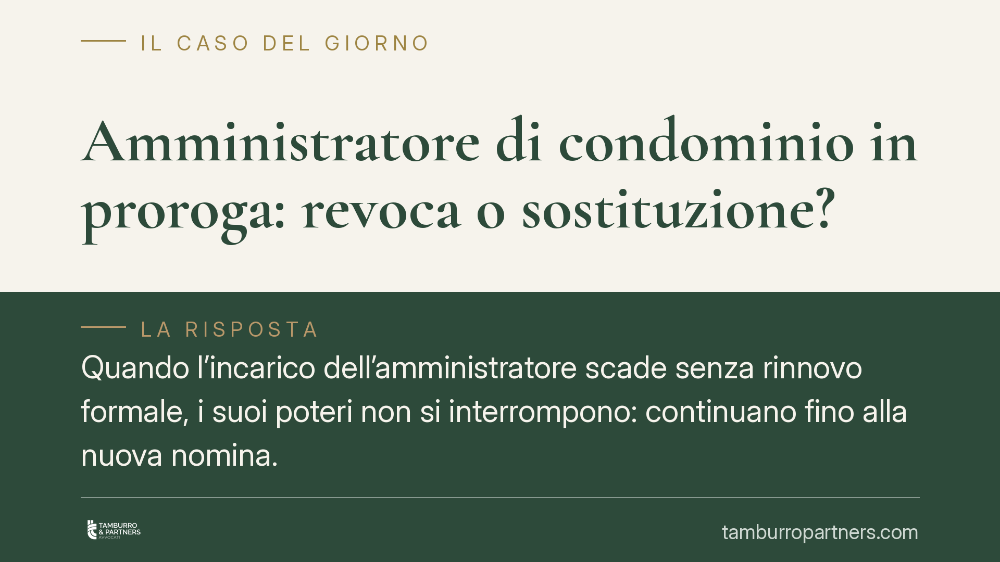

Amministratore di condominio in proroga: revoca o sostituzione?
Quando l'incarico dell'amministratore scade senza rinnovo formale, i suoi poteri non si interrompono: continuano fino alla nuova nomina. Un tema che genera confusione tra i condòmini, soprattutto sul punto se sia possibile «revocarlo» e sul suo diritto al compenso per l'attività svolta nel periodo di proroga. Vediamo cosa prevede la legge e come muoversi in assemblea.

Il contesto: la prorogatio dell'amministratore
L'incarico dell'amministratore di condominio ha durata annuale e si intende rinnovato tacitamente per un altro anno, salvo revoca o dimissioni. La disciplina è contenuta nell'art. 1129, decimo comma, del Codice civile.
Quando l'incarico scade e l'assemblea non provvede né al rinnovo né a una nuova nomina, si apre la fase della cosiddetta *prorogatio*: l'amministratore uscente resta in carica per assicurare la continuità della gestione, evitando che il condominio rimanga privo di un rappresentante. È un principio elaborato dalla giurisprudenza per garantire la funzionalità dell'ente di gestione: senza amministratore non si pagano le utenze, non si riscuotono le quote, non si affrontano le urgenze.
Revoca o sostituzione? La distinzione che conta
Qui sta il punto spesso frainteso. L'amministratore in proroga non è tecnicamente revocabile, perché la revoca presuppone un incarico in corso di validità. In prorogatio l'incarico è già scaduto: l'amministratore prosegue solo in forza del principio di continuità.
Lo strumento corretto non è quindi la delibera di revoca, ma la nuova nomina. L'assemblea che nomina un altro amministratore fa automaticamente cessare i poteri di quello in proroga. La differenza non è formale: se si delibera una «revoca» quando in realtà si vuole cambiare amministratore, il verbale rischia di essere impreciso e di prestare il fianco a contestazioni. La via lineare è mettere all'ordine del giorno la nomina del nuovo amministratore.
Il compenso per l'attività in proroga
Profilo più delicato è quello economico. L'attività svolta durante la prorogatio va retribuita? Il tema è stato oggetto di orientamenti non uniformi nella giurisprudenza di merito, con pronunce che hanno talora escluso il compenso in assenza di un nuovo incarico deliberato.
Sul piano ricostruttivo, il rapporto tra amministratore e condominio si inquadra nello schema del mandato. Nella fase di proroga il mandato non si estingue di colpo, ma prosegue *ex lege* per garantire la continuità gestoria. In questa prospettiva trova spazio l'applicazione dei principi in materia di mandato, tra cui il diritto del mandatario al compenso e al rimborso delle spese (cfr. art. 1720 c.c.), a fronte di un'attività effettivamente prestata nell'interesse del condominio.
> Nota: alla data di redazione, alcune ricostruzioni giornalistiche attribuiscono l'affermazione del diritto al compenso in proroga a una recente pronuncia della Corte di Cassazione. Il riferimento va verificato negli estremi ufficiali (numero e data) prima di essere richiamato come precedente vincolante. In questa sede si espone il quadro dei principi, senza attribuire una massima a una singola sentenza non confermata.
Resta fermo che il diritto al compenso non elimina l'obbligo di rendicontazione. L'amministratore, anche in proroga, deve redigere il rendiconto annuale secondo l'art. 1130-bis c.c., con estratto conto e registro di contabilità. Le eventuali contestazioni economiche dei condòmini si giocano proprio sulla trasparenza e sulla congruità di questa documentazione, non sulla mera opposizione al principio della retribuzione.
Implicazioni pratiche
Per i condòmini che vogliono cambiare amministratore, la conseguenza è concreta: non serve una battaglia sulla «revoca», serve convocare l'assemblea e nominare un nuovo professionista. Fino a quel momento, l'amministratore in proroga conserva pieni poteri e le sue decisioni sono valide.
Per l'amministratore, la fase di proroga non è un vuoto giuridico: comporta doveri (continuità, rendiconto) e, di riflesso, diritti economici collegati all'attività realmente svolta.
Cosa fare in concreto
- Verificate la data di scadenza dell'incarico consultando il verbale di nomina: è il presupposto per capire se si è in proroga.
- Se volete cambiare amministratore, inserite all'ordine del giorno la «nomina del nuovo amministratore», non la revoca di quello in carica.
- Redigete un verbale chiaro che dia atto della cessazione dei poteri dell'uscente a seguito della nuova nomina.
- Chiedete all'amministratore uscente la consegna della documentazione e il rendiconto ex art. 1130-bis c.c. relativo anche al periodo di proroga.
- Prima di contestare compensi o passaggi di consegne, è opportuno far verificare la documentazione da un professionista, valutando i profili di mandato applicabili al caso concreto.
---
*Contributo informativo a cura di Tamburro & Partners – Avv. Giuseppe Tamburro. Non costituisce parere legale.*
Ogni condominio ha una storia a sé.
Se gestisci un'amministrazione e vuoi un confronto su una specifica questione condominiale, scrivi allo studio. Ti rispondiamo entro un giorno lavorativo.